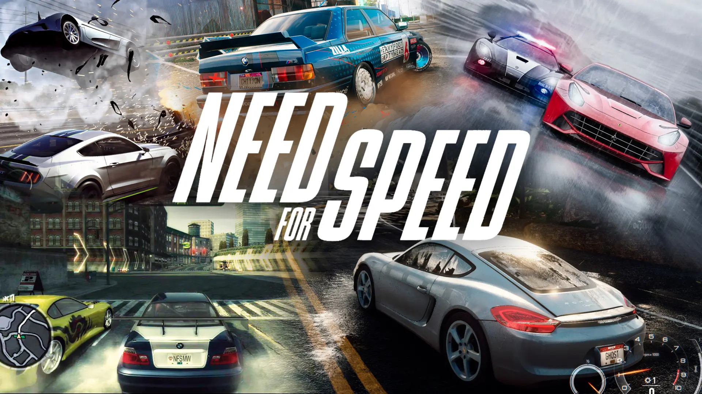

🏁 Need for Speed

Género: Carreras / Arcade
Desarrolladoras: EA Canada, Black Box, Criterion Games, Ghost Games, Codemasters
Distribuidora: Electronic Arts
Primer lanzamiento: 1994 (3DO, luego PC y PlayStation)
Ventas totales de la franquicia: Más de 150 millones de copias
📖 ¿Qué es Need for Speed?
Need for Speed (NFS) es la saga de carreras más longeva y exitosa de la historia. Nació en 1994 con la idea de combinar coches exóticos (Ferrari, Lamborghini, Porsche) con persecuciones policiales y personalización. A lo largo de más de 30 años, ha tenido altibajos, pero sigue siendo el referente del género arcade.
🎮 Evolución de la saga
Era clásica (1994-2001)
- Road & Track Presents: Need for Speed (1994): El primero. Coches de ensueño y carreteras reales. Videos de autos reales entre pantallas de carga.
- Need for Speed II (1997): Introdujo coches "prototipo" como el McLaren F1. Mejores gráficos y físicas más arcade.
- Need for Speed III: Hot Pursuit (1998): Revolucionó la saga con persecuciones policiales. Podías ser el policía o el infractor.
- Need for Speed: High Stakes (1999): Añadió daños mecánicos y apostar tu coche en las carreras.
- Need for Speed: Porsche Unleashed (2000): Solo coches Porsche. Modo evolución desde 1950 hasta 2000. Considerado el más realista.
Era Underground (2002-2005)
- Need for Speed: Hot Pursuit 2 (2002): Regreso a persecuciones con autos exóticos. Buen equilibrio entre realismo y arcade.
- Need for Speed: Underground (2003): PUNTO DE INFLEXIÓN. Cambió los superdeportivos por tuning de autos callejeros. Carreras nocturnas en ciudad, personalización estética y mecánica.
- Need for Speed: Underground 2 (2004): Ciudad abierta (no menús), puedes explorar libremente. Introdujo el sistema de reputación "respeto". Personalización enfermiza: faros neón, llantas, vinilos, hidráulica, etc.
- Need for Speed: Most Wanted (2005): La entrega más famosa. Combina el tuning de Underground con persecuciones policiales estilo Hot Pursuit. Tienes que escalar "La Lista Negra" de corredores para convertirte en el más buscado.
Era Carbon a Rivals (2006-2013)
- Need for Speed: Carbon (2006): Carreras por equipos y persecuciones en cañones. Secuela directa de Most Wanted.
- Need for Speed: ProStreet (2007): Carreras legales en circuitos cerrados. Sin policías.
- Need for Speed: Undercover (2008): Infiltración policial. Protagonizado por la actriz Maggie Q.
- Need for Speed: Shift (2009) y Shift 2 (2011): Intentaron ser simuladores realistas. Aleación con carreras de GT.
- Need for Speed: Hot Pursuit (2010): Regreso a persecuciones con autos exóticos. Desarrollado por Criterion (los creadores de Burnout). Física Burnout (derrapes, nitro).
- Need for Speed: The Run (2011): Carrera contrarreloj de San Francisco a Nueva York. Escenas cinematográficas.
- Need for Speed: Most Wanted (2012): No confundir con el de 2005. Mundo abierto, cualquier coche está oculto en la ciudad.
Era moderna (2013-actualidad)
- Need for Speed: Rivals (2013): Persecuciones de nueva generación (PS4, Xbox One).
- Need for Speed (2015): Regreso a Underground: nocturno, tuning, ciudad abierta. Siempre online obligatorio (criticado).
- Need for Speed: Payback (2017): Ambientado en Las Vegas. Persecuciones, atracos y personalización de coches.
- Need for Speed: Heat (2019): Día (carreras legales) vs Noche (carreras ilegales). Considerado el mejor de la última década.
- Need for Speed: Unbound (2022): Estilo grafiti, efectos de humo y líneas de colores. La entrega más arriesgada visualmente.
🏆 Las entregas más icónicas
🏆 Need for Speed: Underground (2003)
Cambió todo. De los superdeportivos a los coches callejeros (Honda Civic, Mitsubishi Eclipse, Nissan Skyline). Carreras nocturnas en ciudad, neones bajo los coches, y la banda sonora con rap y drum and bass (The Crystal Method, Rob Zombie, Static-X). Ese "To the windoooooow, to the wall!" es inolvidable.
🏆 Need for Speed: Most Wanted (2005)
La más querida por los fans. Tiene un sistema de persecuciones policiales increíble: puedes estar 30 minutos escapando de 20 patrulleros, helicópteros y hasta un tanque. Escalar "La Lista Negra" de 15 corredores es una sensación de progresión adictiva.
🏆 Need for Speed: Heat (2019)
El resurgir de la saga. De día ganas dinero en carreras legales. De noche participas en carreras ilegales que suben tu nivel de calor policial. Si te atrapan, pierdes todo lo ganado esa noche. Es el equilibrio perfecto entre Underground y Most Wanted.
👥 Principales rivales y personajes
- Razor (Most Wanted 2005): Líder de la Lista Negra. Te roba tu BMW M3 GTR al principio. Es el antagonista principal.
- Cross (Most Wanted 2005 y Carbon): Sargento de policía obsesionado con atraparte. Su voz ronca y sus frases son míticas.
- Eddie (Underground): El rival principal del primer Underground. Pilota un Nissan Skyline morado.
- Mia (Most Wanted 2005): Tu contacto dentro de la policía. Al final resulta ser agente encubierta.
- Darius (Carbon): El jefe final de Carbon. Conduce un Audi Le Mans Quattro y es el más astuto.
🎵 La música en Need for Speed
Una de las señas de identidad de NFS es su banda sonora. Cada entrega tiene un género distintivo:
- Underground (2003): Rap, rock industrial y drum and bass. Lil Jon, Rob Zombie, Static-X.
- Underground 2 (2004): Snoop Dogg, Queens of the Stone Age, The Doors.
- Most Wanted (2005): Rock alternativo y electrónica pesada. Disturbed, Avenged Sevenfold, Bullet for My Valentine.
- ProStreet (2007): Electro, house y drum and bass. Justice, Chemical Brothers.
- Heat (2019): Trap, hip hop y música latina. A$AP Rocky, JID, Denzel Curry.
- Unbound (2022): Lo más variado: rap, pop, hyperpop, house. A$AP Rocky, Charli XCX, Kaytranada.
🎮 La personalización
Underground fue el primer juego que permitió modificar estéticamente los coches: alerones, llantas, faldones, capós, vinilos, neones, y hasta el sonido del escape. Con la reputación, desbloqueabas piezas mejores. Underground 2 llevó la personalización al extremo: hidráulica, pantallas en el maletero, luces de xenón y hasta sistemas de sonido.
Most Wanted simplificó la personalización pero enfatizaba las persecuciones. Heat y Unbound recuperaron la personalización profunda, con cientos de combinaciones.
🚓 Las persecuciones policiales
Need for Speed hizo famosas las persecuciones con la policía. El sistema de "calor" indica cuánto te buscan. Cuanto más calor, más agresivos son los policías. En Most Wanted 2005, puedes alcanzar nivel 5 o 6 de calor, aparecen helicópteros, furgones blindados y hasta un tanque con cuchillas. Escaparte no es fácil: tienes que romper el contacto visual o encontrar escondites. En Underground no había policías, solo carreras.
🎬 Adaptaciones y legado
En 2014 se estrenó la película Need for Speed con Aaron Paul (Breaking Bad). Recaudó 203 millones de dólares. No fue un éxito crítico, pero tuvo buenas escenas de coches reales (sin CGI excesivo).
La saga ha vendido más de 150 millones de copias, siendo la franquicia de carreras más vendida, por delante de Gran Turismo y Forza.
Puntuación general: ⭐⭐⭐⭐ (4/5 - Altibajos, pero las entregas icónicas son imprescindibles para cualquier amante de los coches y el arcade)
← Volver a la lista de juegos